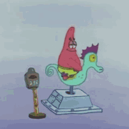

<!DOCTYPE html>
<html>
    <head>
        <title> Saul's Vault</title>
        <meta charset="UTF-8">
        <meta name="viewport" content="width=device-width, initial-scale=1.0">
        <link rel="stylesheet" type="text/css" href="style.css">
    </html>
    <body>
        
        <div id="main-content" class="screen">
            <h1> Hola amigos de la interweb</h1>
            <h1>Welcome to the Page!</h1>

            
            <div>
                <p>It was this howling and firing of the guns at Ripley and St. George's Hill that we had heard at Upper Halliford. The Ripley gunners, unseasoned artillery volunteers who ought never to have been placed in such a position, fired one wild, premature, ineffectual volley, and bolted on horse and foot through the deserted village, while the Martian, without using his Heat-Ray, walked serenely over their guns, stepped gingerly among them, passed in front of them, and so came unexpectedly upon the guns in Painshill Park, which he destroyed.</p>
                <p style="text-align:right">H. G. Wells - The War of the Worlds, Chapter 15</p>
            </div>
            
        </div>

        <script src="script.js"></script>
    </body>
</html>